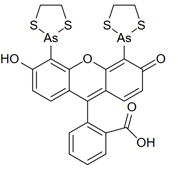
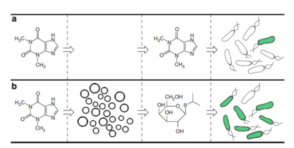

HTGAA : Synthetic Minimal Cells
Offered in 2019 , Updated 05/30/2023 Kate Adamala (University of Minnesota)
EXPERIMENTAL ASSINGMENT
In this exercise you will use some light pipetting skills, you will prove you can work in RNAse free environment, and you will do simple reaction setup calculations. You will also need to look up few simple biochemical values in the literature.
You will perform experiments that will result in direct visualization of the translation processes – observing the protein product as it’s being formed. You will set up one of two cell-free protein synthesis reactions: synthesis of GFP or FIAsH protein.
GFP is green fluorescent protein – you can go learn more on Wikipedia. Mature GFP is fluorescent on it’s own – the fluorophore is made of amino acids from the GFP protein itself.
FIAsH is a very short protein, not fluorescent on its own. The fluorescence comes from the ligand, a small molecule that’s bound to the FIAsH peptide. The ligand’s full name is fluorescein arsenical helix binder bis-EDT adduct, FIAsH-EDT2.

Set up few GFP reactions and few FLAsH reactions, depending on how many people there is in class and how would you like to split into groups.
1. Math before pipetting.
Calculate final volumes and concentrations of your expression reaction, using the table below.
Each final reaction volume will be 15uL total.
You will mix all components of the translation system. For GFP reaction, you will mix everything in the table below EXCEPT FIAsH ligand and MES. You will use those two only for the FIAsH reactions.
|
Reagent |
stock |
final |
uL to use in one 20uL reaction |
function |
|
water to total |
|
|
Solvent |
|
|
Mg-glutamate (mM) |
1000mM |
12mM |
|
salt |
|
K-glutamate (mM) |
3000mM |
140mM |
|
salt |
|
DTT (mM) |
100mM |
1mM |
|
reducing agent |
|
energy mix |
10x |
1x |
|
translation juice* |
|
amino acids |
20mM |
2mM |
|
|
|
RNAse inhibitor Murine 40U/ul |
50x |
1x |
|
|
|
T7 RNAP |
100uM |
1.5uM |
|
RNA polymerase |
|
Cell Free Prep |
3x |
1x |
|
ribosomes |
|
Plasmid |
|
10nM |
|
your gene here |
|
FIAsH ligand (if needed) |
1mM |
5uM |
|
|
|
MES |
1M |
20mM |
|
buffer for FLAsH ligand only |
*”energy mix” is name for a solution of:
15mM ATP and GTP
9mM CTP and UTP
0.68 mM folinic acid
2 mg/mL of E. coli tRNA mixture
3.3 mM nicotinamide adenine dinucleotide (NAD)
2.6 mM coenzyme-A (CoA);
15 mM spermidine
40 mM sodium oxalate
7.5mM cAMP
300mM 3-PGA (energy)
500mM HEPES pH 8
Bonus knowledge: do you understand why each of those components is needed?
Plasmid concentration calculations:
You need to convert typical plasmid stock concentration given as weigh/volume into molar concentration for both plasmids.
GFP plasmid- 352 ng/ul, tips: see plasmid map, how big is the plasmid? what’s the MW?
FlAsH peptide plasmid- 212 ng/ul, see plasmid map
For FlAsH peptide expression, the txtl reaction should be mixed with the FlAsH ligand FIAsH-EDT2 (stock concentration of 1mM) and the MES buffer (stock of 1M) to final concentrations of 5uM and 20mM, respectively.
Q: how much of the ligand and MES buffer do you need to add to the final TxTl reaction, from those stock solutions? (you will replace some of the water in the txtl setup below)
Other setup math:
For fluorescence detection: what wavelength are you going to use to detect eGFP? FIAsH can be detected using the same filtersets.
2. Math in general, and information search.
You will need the following info:
- Compare size difference of FIAsH peptide vs GFP peptide. (obvious tip: peptide size, NOT plasmid size)
- What is typical transcription rate in E. coli? (in nucleobases per second) and what is typical translation rate? (in aa/s)
- What is the quantum yield of eGFP? (the variant of GFP you’re using is optimized for cell-free expression, but as approximation you can use cellular eGFP value you will find).
- What is the quantum yield of the FIAsH ligand bound to the peptide? This one will be harder to find. I suggest you do give it a try; mining literature is probably the single most useful skill in science. Clue: senior author of the paper you’re looking for REALLY liked jellyfish. If you get stuck, I sent the right paper to Teja and David.
Knowing all of the values above: if you roughly predict steady state fluorescence of GFP translation reaction vs FIAsH translation reaction (assuming the same starting concentration of all reagents and plasmid), what will be the ratio of the fluorescence from those two reactions?
Please assume the world is perfect: all protein correctly folded and matured, all transcriptions result in full length product, all transcripts get translated equally, both promotors are equal strength (they actually are in your plasmids), FIAsH ligand is in excess (it actually is in your reaction), there’s plenty of oxygen, transcription and translation building blocks are not limiting factors.
Bonus question: why did I mention there has to be plenty of oxygen? which component of your reaction needs oxygen to glow?
3. Reaction setup
The reactions you’re about to set up are very sensitive to RNAse contaminations.
RNAses are like tanks of the protein world: they’re extremely resistant to denaturation, hard to inhibit with small molecules, and preserve activity for a long time under unfavorable conditions. This is great for natural job of defense against pathogen that those enzymes perform. While we cannot hold it against them, RNAses are extremely inconvenient in cell-free work: RNAse contamination will chew up your mRNA transcript and wipe out translation experiments. Therefore, working in RNAse free regime is crucial in any in vitro transcription and translation experiments.
RNAse free regime is harder to maintain than sterrile regime. RNAses are not removed by autoclaving. Any RNase free space is sterrile, but not every sterrile space is RNAse free.
Before you start pipetting, consider the table you created in step 1: is any of the volumes you're required to pipet for single reaction perhaps too small to pipett reliably with the pipettes you have? What would be the solution to this problem? (tip: do you need to set up all reactions independently? or can you premix some reagents and make master stocks?)
Thoroughly clean up your working space. Wipe the bench. Use fresh gloves when you start pipetting. Do not touch anything with your RNAse free gloved hands. If your ear is itching, use clean pipette tip to scractch. With your clean gloved hands, do not touch your face, hair, phone, water bottle, or anything else that is not clean lab equipment. If you need a break, put on fresh gloves when you come back. Sneeze away from the bench, please.
When you are ready to set up reagents, mix everything in the following order: first, inorganic salts and plasmid, then energy and aa mix, then enzymes (RNAse inhibitor, T7 RNAP), at the end add ribosome mix. Pippet everything gently up and down few times to mix thoroughly, do not vortex.
Start reading fluorescence as soon as you can, but you will not see a signal for at least half hour to an hour.
Can you guess which sample will show fluorescence first: GFP or FLAsH?
4. Analysis
Run your reaction as long as possible. We typically run it for 12h to overnight.
Plot fluorescence vs time for GFP and for FLAsH. Plot error bars (SEM is fine) for both sample sets.
How much difference do you see between each replicate? Are your separate GFP and separate FLAsH samples a biological or a technical replicate?
Do you see reaction plateau at some point? Why is that? Why doesn't the fluorescence just keep going up and up for the entire time of the reaction?
WRITING ASSINGMENT
Design an useful synthetic minimal cell.
Example solution to the SMC assignment, based on: Lentini, R. et al., 2014. Integrating artificial with natural cells to translate chemical messages that direct E. coli behaviour. Nature communications, 5(May), p.4012.
1. Pick a function.
1A What would your synthetic cell do? What is the input and what is the output.
Expand the sensing capacity of bacteria. Input: theophylline (inert to bacteria). Output of the SMC: IPTG. Output of the whole system: GFP produced in bacteria.
Theophyline Aptamer reference: Martini, L. & Mansy, S.S., 2011. Cell-like systems with riboswitch controlled gene expression. Chemical Communications, 47(38), p.10734.
1B Could this function be realized by cell free Tx/Tl alone, without encapsulation?
No. If the IPTG was not encapsulated, it would go into the bacteria without the need of theophylline-induced membrane channel synthesis, thus the synthetic cell actuator would not exist.
1C Could this function be realized by genetically modified natural cell?
Yes, in this particular case: the theophylline aptamer could be incorporated into transformed gene. This lacks the generality though – it is easier to make SMC than modify bacteria, so in this system single bacteria reporter can be used to detect various small molecules.
1D Describe the desired outcome of your synthetic cell operation.
In presence of SMC, bacteria sense theophylline.
2. Design all components that would need to be part of your synthetic cell.
2A What would be the membrane made of?
Phospholipids + cholesterol.
2B What would you encapsulate inside? Enzymes, small molecules.
Cell free Tx/Tl system, IPTG, gene for membrane transporter under the control of theophylline aptamer.
2C Which organism your tx/tl system will come from? is bacterial OK, or do you need mammalian system for some reason? (hint: for example, if you want to use small molecule modulated promotors, like Tet-ON, you need mammalian).
Bacterial, because of the theophylline riboswitch used as SMC input.
2D How will your synthetic cell communicate with the environment? (hints: are substrates permeable? or do you need to express membrane channel?)
The membrane is permeable to the input molecule (theophylline), the output is IPTG that will cross the membrane via the membrane pore created after theophyline-initiated gene expression.
3. Experimental details
3A List all lipids and genes (bonus: find the specific genes; for example, instead of just saying “small molecule membrane channel” pick actual gene)
Lipids: POPC, cholesterol
Enzymes: bacterial cell free tx/tl
Genes: a-hemolysin (aHL) to encapsulate in SMC,
Biological cells: E.coli transformed with GFP under T7 promoter and a lac operator
3B How will you measure the function of your system?
Measure GFP output of the cells, via flow cytomertry. Alternatively, use enzymatic reporter, like luciferase, and measure bulk output of the enzyme.
Scheme

Artificial cells translate chemical signals for E. coli. (a) In the absence of artificial cells (circles), E. coli (oblong) cannot sense theophylline. (b) Artificial cells can be engineered to detect theophylline and in response release IPTG, a chemical signal that induces a response in E. coli.
Opentrons Script
To be added